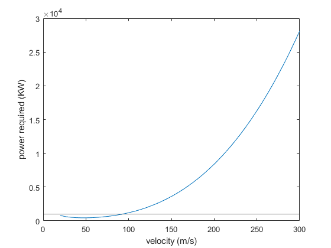

Steps = 1000;
Vdc3 = linspace(20,300,1000);
Mdc3 = 11431;
Wdc3 = 9.81 * Mdc3;
Adc3 = 91.7;
CD0dc3 = 0.0267;
efficiency = 0.7;
AR = 9.17;
DragConstantdc3 = 1 / (pi * AR * efficiency);
Rsealevel = 1.225;
Raltitude = 1.6480 * 10^(-3) * (14.5939 / 0.0283168);
Powerdc3 = zeros(1,Steps);
Pmax = 2 * 890;
PropEfficiency = 0.8;
Pmaxactual = Pmax * (Raltitude / Rsealevel) * PropEfficiency;
for x = 1:Steps
Datadc3 = LandDfromV(Vdc3(x),Wdc3,CD0dc3,DragConstantdc3,Adc3,Raltitude);
Powerdc3(x) = ((Vdc3(x) * Wdc3) / (Datadc3(1) / Datadc3(2))) / 1000;
end
plot(Vdc3,Powerdc3);
yline(Pmaxactual);
xlabel("velocity (m/s)");
ylabel("power required (KW)");
